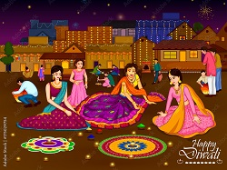

Diwali Celibration Include many memorable events,includeing examples of
humanity in a persons life ,which enhance the feeling of a persons relationship with
each other . on diwali in india, people clean and decorate their house, yard
office, vehicles and useful things in their daily life, which shows a deep love of people
towords their house ,office vehicles and things that are useful to them.espacially
that people forget their revenge and celebrate this occasion by bringing gifts
for each other in their family. so diwali celibration according to the points given above..
|

|